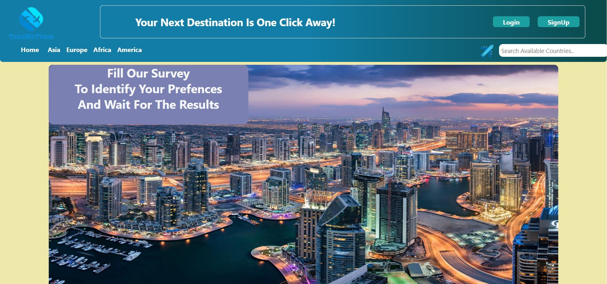

Take Me There
Project Description
The travel guide website is a comprehensive platform designed to assist travelers in planning their next adventure. With a user-friendly interface and extensive database of destinations, the website offers valuable insights into top countries worldwide, categorized by continent for easy navigation. From culinary delights to scenic landscapes and budget-friendly options, users can explore curated lists of destinations and access detailed information to tailor their travel experiences according to their preferences and budget.



Technologies Used
- HTML
- CSS
- bootstrap
- JavaScript
- PHP
- SQl
- Responsive
Project Features
- Continental Navigation:
- Organized Content: The website features a navbar categorizing countries by continent, facilitating easy exploration of destinations across the globe.
- Intuitive Navigation: Users can navigate between continents and countries effortlessly, with dropdown menus and clickable links providing a seamless browsing experience.
- Curated Destination Lists:
- Top 10 Lists: The homepage showcases three prominent cards highlighting curated lists of top destinations based on specific criteria, including countries known for their culinary delights, scenic beauty, and affordability for tourists.
- Informative Content: Each list provides concise descriptions of the featured destinations, offering insights into the unique attractions and experiences that make these countries stand out.
- Country-Specific Pages:
- Detailed Information: Each country has its dedicated page featuring comprehensive information about the destination, including general overview, cultural highlights, and travel tips.
- Multimedia Content: Users can explore a slideshow of iconic landmarks and scenic vistas showcasing the country's beauty, providing visual inspiration for their travel plans.
- Weather Forecast: Integrated weather information provides users with current and forecasted weather conditions for the destination, aiding in trip planning and packing decisions.
- Cost Estimates: The website offers average cost estimates per trip for a single traveler, encompassing accommodation, meals, transportation, and entertainment expenses, helping users budget effectively for their journeys.
- User Interaction:
- User Feedback: Visitors can leave feedback and reviews for each country based on their travel experiences, sharing insights and recommendations with fellow travelers.
- Photo Sharing: Users have the option to upload and share their travel photos for each country, enriching the website's content with authentic imagery and personal experiences.
- Survey Feature:
- Personalized Recommendations: The website includes a survey feature where users can answer questions about their travel preferences, including weather preferences, budget considerations, and the purpose of their trip (e.g., honeymoon, family vacation, group trip).
- Automated Suggestions: Based on the user's responses to the survey questions, the website generates personalized recommendations, suggesting the best countries that align with the user's preferences and travel goals.